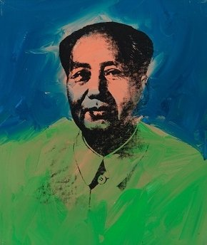

Mao
Andy Warhol · 1973 · Acrylic and screenprint on linen · 66.5 × 55.9 cm · Whitney Museum of American Art, New York
In copyright. Look and learn: shown for study, not for download.
Warhol began the Mao paintings in 1972, after a period spent mostly on filmmaking. According to Bob Colacello, his Swiss dealer Bruno Bischofberger suggested he depict the most important figure of the twentieth century and proposed Albert Einstein; Warhol answered that he had just read in Life magazine that the most famous person in the world was Chairman Mao. He worked from a widely circulated portrait by the Chinese artist Zhang Zhenshi and made hundreds of images.